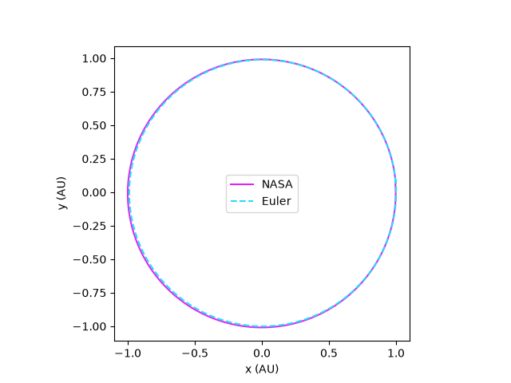

Earth-Moon-Sun Orbit Simulation

Taking a predefined dictionary of Earth, Moon, and Sun position and velocity vectors, we calculate the force on each body with respect to the others, and plot the trajectory of the Earth. We compare these results against the NASA Earth Horizons database from 2013.
View on GitHub